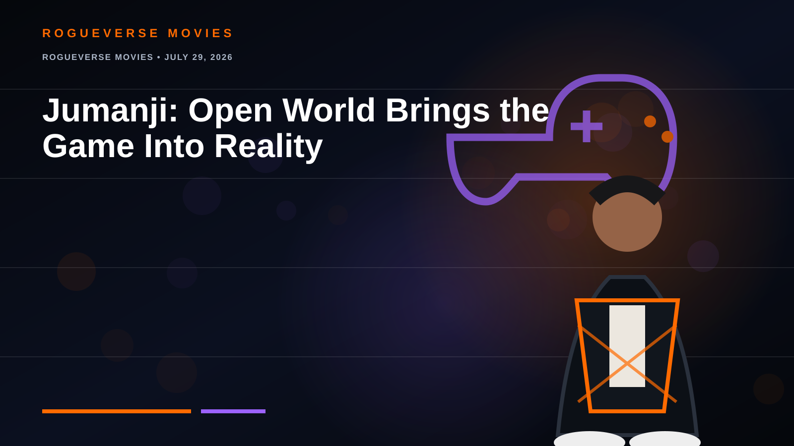

ROGUEVERSE MOVIES • JULY 29, 2026
Jumanji: Open World Brings the Game Into Reality
The final game flips the modern series inside out: this time, Jumanji escapes into our world.

The new trailer reunites Dwayne Johnson, Jack Black, Kevin Hart and Karen Gillan. Instead of pulling players into the videogame, Open World unleashes its avatars and rules into reality.
The premise reconnects the sequels to the original idea: Jumanji does not stay contained. The film opens December 25, 2026.
Status: official trailer released; Christmas Day theatrical date confirmed.
← RogueVerse Movies